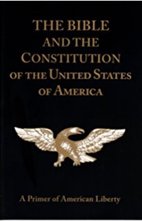

- Home
- About Constitution of Other Countries
Constitution of America

The U.S. Constitution established America’s national government and fundamental laws, and guaranteed certain basic rights for its citizens. It was signed on September 17, 1787, by delegates
to the Constitutional Convention in Philadelphia,
presided over by George Washington. Under America’s first governing document, the Articles of Confederation, the national government was weak and states operated like independent countries. At the 1787 convention, delegates devised a plan for a stronger federal government with three branches–executive, legislative and judicial–along with a system of checks
and balances to ensure no single branch would have too much power.
The Bill of Rights–10 amendments guaranteeing basic individual protections such as freedom of speech and religion–became part of the Constitution in 1791.
To date, there have been a total of 27 constitutional amendments.
America’s first constitution, the Articles of Confederation, was ratified in 1781, a time when the nation was a loose confederation of states, each operating like independent countries. The national government was comprised of a single legislature, the Congress of the Confederation; there was no president or judicial branch.
The Articles of Confederation gave Congress the power to govern foreign affairs, conduct war and regulate currency; however, in reality these powers were sharply limited because Congress had no authority to enforce its requests to the states for money or troops.
Constitution of Austrailia
The Australian Constitution was drafted at a series of constitutional conventions held in the 1890s. It was passed by the British Parliament as part of the Commonwealth of Australia Constitution Act 1900 and took effect on 1 January 1901.
The Constitution is the legal framework for how Australia is governed and it can only be changed by referendum.
The Australian Constitution is the set of rules by which Australia is governed. Australians voted for the national constitution in a series of referendums. The Australian Constitution establishes the composition of the Australian Parliament, and describes how Parliament works, what powers it has, how federal and state Parliaments share power, and the roles of the Executive Government and the High Court. It took effect on 1 January 1901.
In addition to the national Constitution, each Australian state has its own constitution. The Australian Capital Territory and Northern Territory have self-government Acts which were passed by the Australian Parliament.
Constitution of Russia

The current Constitution of the Russian Federation (Russian: Konstitutsiya Rossiyskoy Federatsii; pronounced [k?ns?t??'tuts?j? r?'s?ijsk?j f??d??'rats??]) was adopted by national referendum on December 12, 1993. Russia's constitution came into force on December 25, 1993, at the moment of its official publication, and abolished the Soviet system of government. The current Constitution is the most long-lived in the history of Russia, except for Stalin's constitution.
The 1993 Constitutional Conference was attended by over 800 participants. Sergei Alexeyev, Sergey Shakhray, and sometimes Anatoly Sobchak are considered as co-authors of the constitution. The text of the constitution was inspired by Mikhail Speransky's constitutional project and current French constitution.[1]
A constitutional referendum was held in Russia on 12 December 1993. Of all registered voters, 58,187,755 people (or 54.8%) participated in the referendum. Of those, 32,937,630 (54.5%) voted for adoption of the Constitution.[2] It replaced the previous Soviet-era Constitution of April 12, 1978 of Russian Soviet Federative Socialist Republic (which had already been amended in April 1992 to reflect the dissolution of the Soviet Union and the sovereignty of the Russian Federation), following the 1993 Russian constitutional crisis.